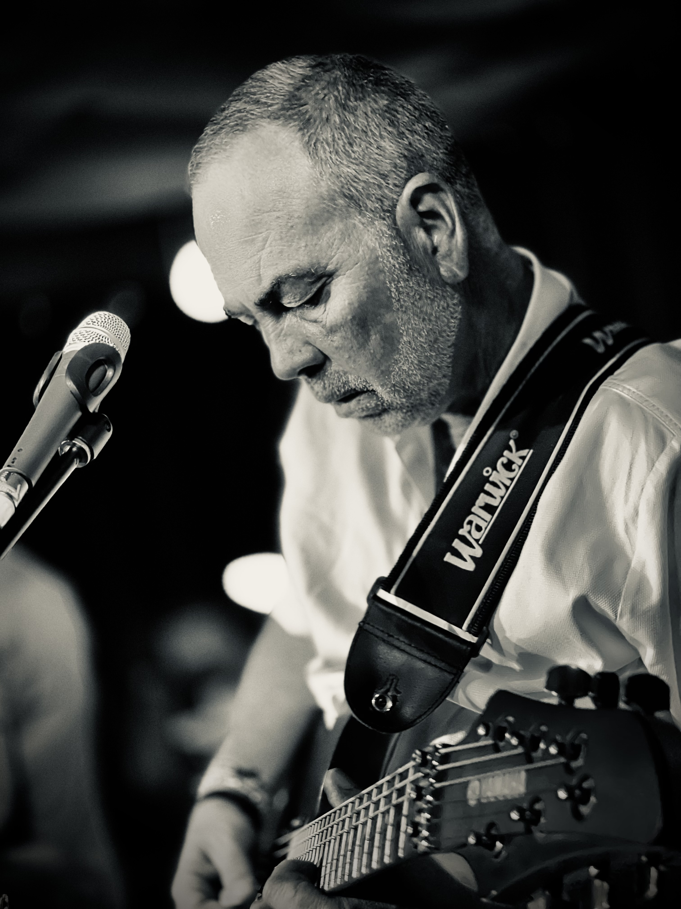

Egyéni portré
20 000 Ft
- 45 perc
- 10 retusált kép
- 1 helyszín
- Online galéria
- Nyomtatott képek fix áron rendelhetők
vagy hívj: +36 30 791 0631
Üdvözöllek.
Ez az oldal nem a képekről szól, hanem arról, ami bennük megmarad. Eszközt adok azoknak, akik az emlékeiket nem bíznák a véletlenre. Ha ez megszólított, görgess tovább.
A világ és a benne élő emberek megérdemlik a figyelmet.
Ezt a figyelmet használom arra, hogy észrevegyem és megőrizzem azokat a pillanatokat, amelyek mellett mások elsétálnak.
Tudatos jelenléttel fotózok, hagyva, hogy a pillanatok is észrevegyenek engem.
PORTRÉ
A portréfotózás számomra nem póz és nem megfelelés, hanem egy esemény.
Előfordul, hogy a pillanat a legjobbkor állítja meg az embert.
Ilyenkor készülnek azok a képek,
amelyeket idős korunkban mosolyogva nézünk majd a falainkon.

LIFESTYLE
Az életünk nagy része csendes pillanatok összességéből áll,
melyek minősége attól függ, hogyan éljük meg őket.
Ezek a fotók azt mutatják meg,
mi történik azokban a percekben,
amelyekre nem készülünk fel.
STREET
Az utca nem díszlet, hanem egy élő jelenet.
Nincs visszatekerés gomb.
A pillanatot vagy elkapod, vagy elszalasztod. Ezért a streetfotózás az észrevétel gyakorlata.
Figyelni arra, ami történik,
mielőtt értelmet keresnénk benne.
STILL
A stillfotók pillanatainak nincsenek ambícióik.
Nem sietnek.
Itt nincs esemény.
Csak meg kell állni és figyelni.
Egyszerű, átlátható csomagok. Egyedi igénynél személyre szabott ajánlat.
20 000 Ft
vagy hívj: +36 30 791 0631
25 000 Ft
vagy hívj: +36 30 791 0631